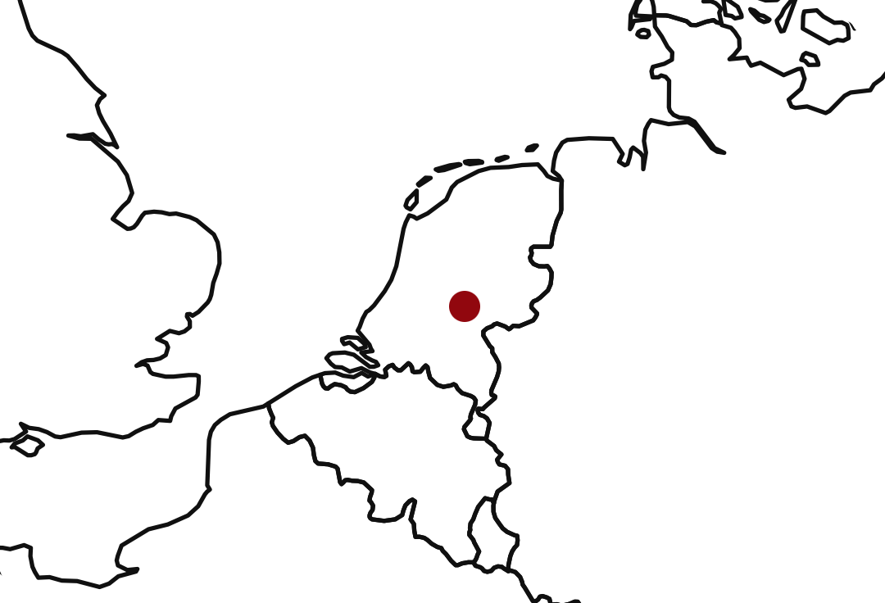

Tobias Otto
Student of Development and Rural Innovation &
Geo-information Science
Hi! I'm a student at Wageningen University, 
On this website, you can find my thoughts and projects from my studies and my interests in music, baking, foraging, community living, and more. Grab a cup of tea and stay a moment!